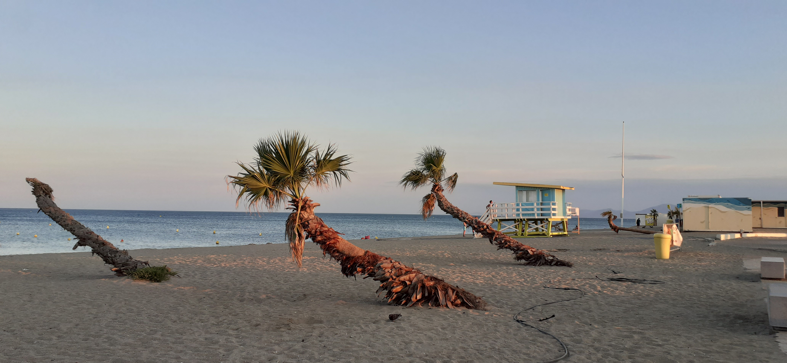
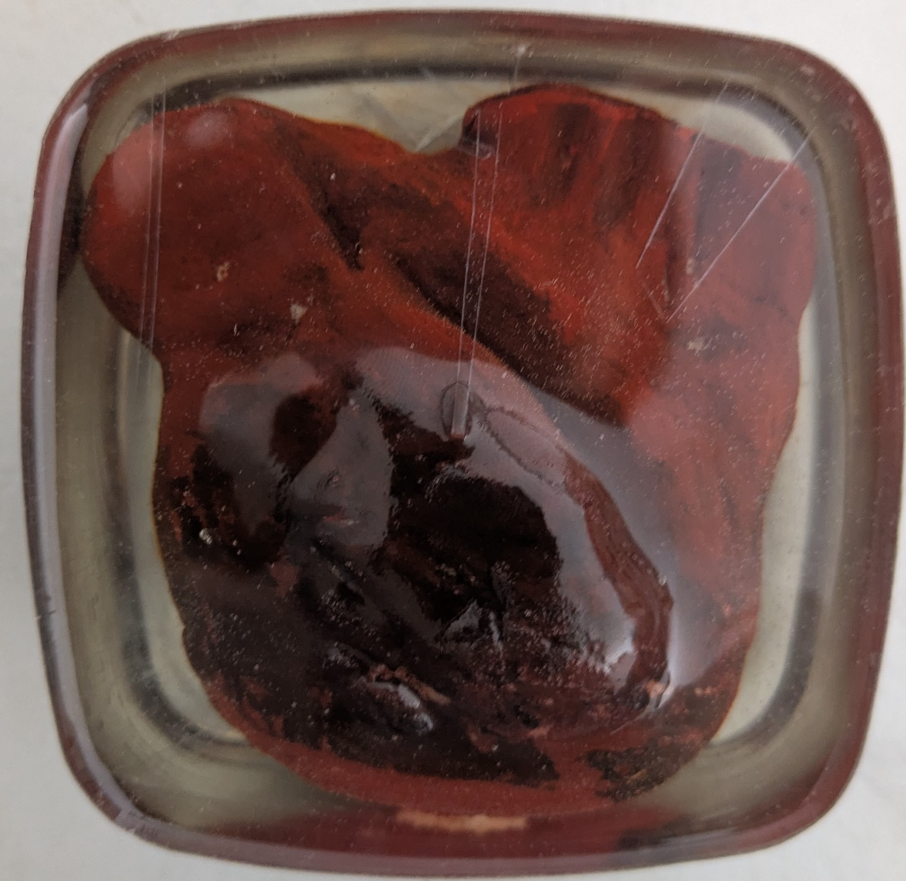

Regarder,
composer, créer.
Des explorations autour de la lumière, des couleurs et du cadrage. À travers la photographie et la peinture, je cherche à transformer des observations du quotidien en compositions visuelles.

L’inspiration du quotidien
Une lumière particulière, un paysage ou une association de couleurs peuvent devenir le point de départ d’une création. Ces images sont l’occasion de porter attention aux détails et de conserver une trace d’une ambiance.
Construire une image
Le cadrage, les contrastes et la place accordée aux éléments influencent la manière dont une image est perçue. Les expérimentations permettent de comparer différentes approches et de trouver une composition qui transmet une atmosphère.
Ce que j’en retiens
Ces réalisations développent mon sens de l’observation et mon intérêt pour la composition. Elles constituent aussi une source d’inspiration pour les projets de communication et de création numérique.

